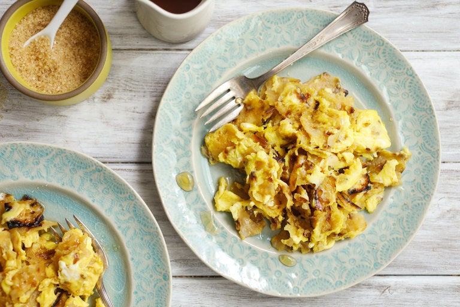

Matzo Brei

Description
In this matzo brei (rhymes with fry) recipe, the matzo sheets are browned in butter until crisp before being lightly scrambled with eggs. It's a fine breakfast or brunch any time of the year, and especially during Passover.
Ingredients
For the Matzo Brei
- 2 sheets matzo
- 2 to 3 tablespoons butter
- 4 large eggs, beaten with 1 tablespoon water
- Large pinch salt, more to taste
To make it savory
- Large pinch black pepper
- Chopped chives, for serving
To make it sweet
- 1 tablespoon Demerrara sugar, more to taste
- Honey or maple syrup, for serving
Steps
- Under cool running water, rinse matzo sheets until they are quite wet. Set it aside and let sit to soften while you prepare the pan.
- Place a large, preferably nonstick skillet over medium-high heat and add butter. Once it melts and the foam subsides, break matzo sheets into bite-size pieces and add to pan. Sauté matzo in butter until it browns all over, about 2 minutes.
- Add eggs, salt and pepper (if you’re making the dish savory) to pan and scramble the mixture until it is just set but still light and fluffy, about 1 minute. Sprinkle with sugar (if you’re making it sweet) and toss well.
- Serve matzo brei sprinkled with salt and topped with chives (savory), or with salt, additional sugar and maple syrup (sweet).